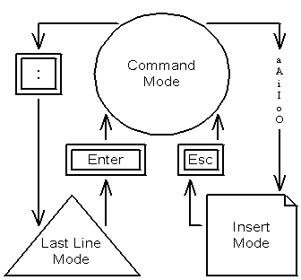
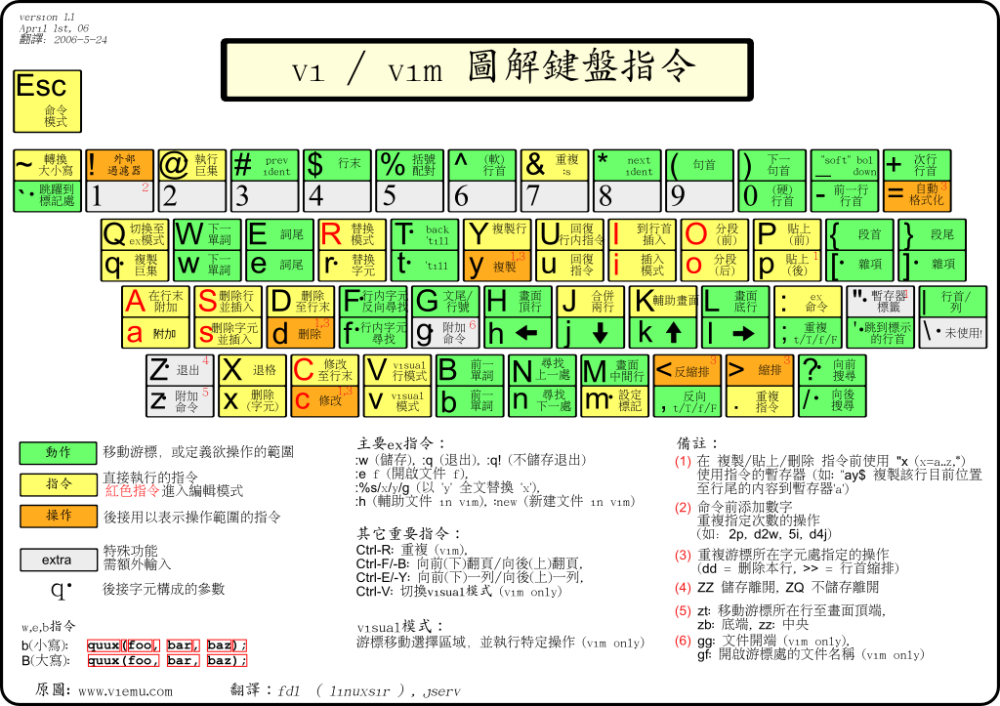

vim
Introduction
Vim 是從 vi 發展出來的 純文字編輯器。vi 是功能很陽春的的純文字編輯器，而 vim 就像是 vi 的加強版，和程式設計相關的功能特別豐富，被廣大的程式設計師們使用。vim 和 Emacs 並列成為 Unix-like system 使用者最喜歡的編輯器。
vim 很大的特色是他的學習曲線非常陡，初學者來說 vim 的使用習慣是非常詭異難懂並難以掌握的，但是一旦熟悉一些基本操作之後，vim 能大幅度提高編輯效率。就像在 windows 環境中使用 記事本或是 Code::Blocks 一般，對於編輯的操作，都是靠滑鼠點擊、移動、選取等，vim 的思維就是把這些編輯功能設計成鍵盤上的按鍵組合，如果熟悉了這些按鍵，會大量減少使用滑鼠 (和手移動到滑鼠的時間)。
一開始學習 vi/vim 並不需要記下太多的操作指令，只求夠用就好，而慢慢學習 vim 的過程中，自然而然會學習到更多的進階功能，最重要的是邊做邊學，只有一邊操作一般學習才能真正的學好 vim
很多前輩都說過：直到用過了 vim，才知道什麼叫作真正的編輯器
更多有趣的介紹可以參考 c9s 前輩的 vim hacks 投影片
vi 是 Bill Joy 開發的可視化(visual)編輯器，源於更古老的 ex 編輯器的 visual 模式
vi mode
vi 有三個 mode，command mode 與 insert mode，和 line mode (ex mode)。 vi 的 mode 有點像是開車一樣，切換排檔的概念，不同 mode 底下能完成不同的事 比較常用的會是 command mode 和 insert mode，分別能輸入指令和直接輸入文字，Line mode 則是指用 ex 指令 直接進入 vi 會先進到 command mode 底下，mode 之間透過 ESC 回到 command mode

vi 已成為 UNIX 底下必備的標準編輯器，幾乎所有的 UNIX 都可以找到 vi 或是其衍生產品 (Gentoo Linux 預設只有 nano 編輯器是個例外)
insert mode
由 command mode 進入 insert mode 有六個常用的按鍵： i I a A o O
i Insert text before the cursor
I Insert text Before the first non-blank in the line
a Append text after the cursor
A Append text at the end of the line
o Begin a new line below the cursor and insert text
O Begin a new line above the cursor and insert text (並把文字往下推一行)
PS. 結束 insert mode 可以用 ESC 來回到 command mode ，接下來可以繼續執行移動，刪除，複製，搜尋等編輯指令。
command mode
vi 的移動一般用鍵盤上的方向鍵就可以，但是學習透過指令移動可以達到非常高效率的編輯速度
^
k 提示︰ h 的鍵位於左邊，每次按下就會向左移動。
< h l > l 的鍵位於右邊，每次按下就會向右移動。
j j 鍵看起來很象一支尖端方向朝下的箭頭。
v
常見移動指令
# 註 : C-f 表示先按著 Ctrl 鍵不放，接著再按下 f
0 移至行首
^ 移至行首第一個非空白處
$ 移至行尾
w 向前一個 word
e 向前一個 word (的結尾)
b 向後一個 word
gg 檔案開頭
G 檔案結尾
:n 移動到 line n # nG 也可以
C-f Page Down (C for Ctrl) # 記法 => Forward
C-b Page Up # 記法 => Backward
C-u half Page Up # 記法 => Upward
C-d half Page Down # 記法 => Downward
% 相匹配的括號 () {} [] 等
刪除指令
x Delete characters under and after the cursor # 就是 delete
X Delete characters before the cursor # 就是 Backspace
dd delete one line
dw delete 到遊標所在的 word 結尾
d0 delete 到 0 (行首)
d$ delete 到 $ (行尾) # 大寫 D 也是一樣的功能
修改指令
(change => delete and insert)
cw change a word
cc change a line
C change to the end of the line
J 串接相鄰行
u 復原 # 記法 => undo
C-r Redo changes which were undone
:e 完全改爛了的時候，重新讀取檔案 # 記法 => edit
. (一個點) 重複上一個步驟
複製貼上
vi 的複製是 y (yank), 貼上是 p (put)，所以 vi 裡面複製貼上會說 yank and put 最常見的用法：
yy 將遊標所在行 yank 起來 => 然後將遊標移至所要貼的行之處按 p ( P 則會出現在遊標之上 )
"指令 + 數字"
在指令模式中，你可以在任何前面提到的動作前面加上數字 n，則你所做的動做將會被重覆n次，
如要刪除十行可以按 10dd ，要複製十行可以用 10yy，
要將同樣的文字重覆寫十次可以用 10i (離開 insert mode 之後，剩下的九次會自動重複)
檔案操作
vi filename 打開 filename 這個檔案，如果缺省 filename 的話會開一個新的檔案
:q quit vi
:wq write and quit
:x 類似 :wq 不過只有檔案有更動時才會寫入
:q! force to quit
:n,mw filename 將 n 到 m 行寫到 filename 裡面
搜尋
/string 向下尋找 string
?string 向上尋找 string
n 找下一個 string 的位置 # 記法 => next
N 找上一個 string 的位置
* Search forward for the word nearest to the cursor.
# Search backward for the word nearest to the cursor.
ex mode
vi 在 command mode 下輸入 : （冒號） 可以開啟 ex mode 常見的用法：
:n,m d ：刪除自第 n 行至第 m 行的文字
:n,m w ：刪除自第 n 行至第 m 行的文字
:n,m s/patern1/patern2/[g][c] ：將自第 n 行至第 m 行的文字中，把 patern1 substitute 成 patern2
# g flag 是指要不要全部都換
# c flag 是在替換前可以確認
編碼設定
vi 對編碼的支援比較不完善，可以透過 locale 或是 screen 來調整 請參考: Setting - 工作站編碼設定(UTF-8))
vim
vim - Vi IMproved,a programmers text editor是由 Bram Moolenaar 所開發，當年他買了一臺新機器，上面卻剛好沒有他愛用的 vi editor，於是，Moolenaar 只好自己在這臺機器上面實作一個與 vi 相似的編輯器
vim 承襲了 vi 的特性，並加入了許多強大的功能，vim 的設定檔 vimrc 具有高度拓展性，可以自由調整自己的使用習慣，使得 vim 在 UNIX 界受到眾多 hackers 的喜愛 vim script 讓大家可以自由的替 vim 開發 plugins ，完成更強大的功能
其實 vim 最基本的功能上面 vi 的介紹已經提過了，這邊補充一下 vim 裡面更多好用的功能
vim 有內建精美的一份 user manual，裡面非常詳細的說明 Vim 各種神奇功能，使用 :h {主題} 來閱讀，例如，:h motion.txt 可以看跟移動相關的介紹，可以透過 tab 切換
移動
參考 :h motion.txt
# 移動遊標到螢幕某處
H To Home (top) line
M To Middle line
L To Last line
# 移動遊標到某個字元
find / to + {char}
f 向右找到 {char} 在本行的位置然後把遊標移過去
t 跟 f 一樣，但是是移動到 {char} 的前一格
F 向左找
T 向左找
# 移動到某個句子或段落
{ 向前一個段落
} 向後一個段落
( 向前一個句子
) 向後一個句子
# 捲動螢幕到某處
zt 把現在的這行捲到螢幕的最上方 # 記法 => top
zz 把現在的這行捲到螢幕的中央
zb 把現在的這行捲到螢幕的底部 # 記法 => bottom
C-y 往上捲一行
C-e 往下捲一行 # 記法 => extra lines
對於遊標上的字元或是該行操作
參考 :h change.txt
r{char} 把遊標上的字元替換成替換 {char} # 記法 => Replace the character
# 重複操作就是改變整行
~ 改變大小寫
g~~ 改變整行的大小寫
gU uppercase
gUU 整行 uppercase
gu lowercase
guu 整行 lowercase
g? 作 ROT13 encode
g?? 整行 ROT13
C-a 將目前遊標上的數字加 1 # 記法 => add
C-x 將目前遊標上的數字減 1 # 記法 => x 掉就是減少
>> 縮排 # 記法 => 往內推一層縮排
<< 反縮排 # 記法 => 往外推一層縮排
Visual Mode
如果你想對某段文字做一些操作 (像是 delete, yank...等) ，那麼你要先選取一段文字。 visual mode 就是選取一段文字，接著可以對選取的文字操作
v 進入 visual mode
V 行模式的 visual mode
C-v 區塊模式的 visual mode
C-v I 選取某個區塊，然後對於每行選取的位置插入文字
Split Window
參考 :h windows.txt vim split 是 vim 其中一項非常強大的殺手級功能，能讓 programmer 同時編輯、對照多個檔案 （以下用 ^ 代表 Ctrl 按鍵）
開啟分割視窗編輯檔案
:sp[lit] filename split 水平分割
:vs[plit] filename vsplit 垂直分割
開啟空 split window
:new (^wn) 跟 sp 和 vs 一樣，只是是開空的 buffer
:vnew
移動遊標到某視窗
# hint: 跟 vim 的遊標移動一樣
^w[jkhl] 下上左右
^wp 往返切換
^ww 循環切換
# 更快的移動
^wt (or ^w^t 也可) Move cursor to top-left window.
^wb (or ^w^b) Move cursor to bottom-right window.
^w[JKHL] Move the current window to be at the very bottom/top/left/right window
^wr / ^wR 將左右(或上下) 視窗對調 # Rotate windows
調整視窗大小
^w> ^w< 邊界往右往左移 # 也可以搭配數字，像是 ^w3> 代表邊界向右邊移動 3 格
^w+ ^w- 邊界上下移動
^w_ ^w| 放大視窗至底部/最右邊
^w= 復原到原本的一半大小
# 也可以用 resize 來完成
:res[ize] +/-N
:vertical res[ize] [N]
# 打開滑鼠模式可以直接用滑鼠調整大小
:set mouse=a
Tab
參考 :h tabpage.txt
tab 是另一個在 vim 裡面編輯多個檔案的方法，跟 split window 的差別在於 tab 是全螢幕的編輯區，不會把 code 都擠在一起
tab 多檔案編輯
# vim 的 -p 選項可以把參數的檔案分別開啟一個 tab
vim -p file1 file2 file3 file1 file2 file3 分別開啟三個分頁
vim -p * 目錄底下所有檔案都用 tab 開啟
常用 tab 指令
:tabnew [filename] tabnew 或是 tabe[dit] 都是打開一個新的 tab 開始編輯
:tabe [filename]
:tabc close a tab
# 切換 tab (通常用 gt 跟 gT 比較快，記憶 => goto tab)
:tabn next tab
gt
:tabp previous tab
:tabN
gT
:tabr (tabrewind) 到 第一個 tab
:tabl (tablast) 到最後一個 tab
:tabs 現在開啟的 tab 列表
text object
參考 :h text-object text object 是 vim 裡面一個特殊的概念，用來說明一項操作的作用對象
"a" 代表 an object
"i" 代表 inner object
簡單來說
aw => a word
iw => inner word
as => a sentence
is => inner sentence
ap => a paragraph
ip => inner paragraph
ab => a () block
ib => inner () block
aB => a {} block
iB => inner {} block
用 delete 為例
"dl" delete character (alias: "x")
"diw" delete inner word
"daw" delete a word
"dd" delete one line
"dis" delete inner sentence
"das" delete a sentence
"dib" delete inner '(' ')' block
"dab" delete a '(' ')' block
"dip" delete inner paragraph
"dap" delete a paragraph
"diB" delete inner '{' '}' block
"daB" delete a '{' '}' block
Folding
參考 :h fold.txt Folding (代碼折疊) 是很多 IDE 俱備的功能，當 code 體積變得很龐雜時，folding 把一段程式、一段函數等實現細節折疊起來可以方便瀏覽整體並把握程式的邏輯 vim folding 指令都是由 z 開頭，簡單的記憶法是 zip the code
folding method
vim 有六種 folding 模式，可以依照不同的情形使用
manual manually define folds
indent more indent means a higher fold level
expr specify an expression to define folds
syntax folds defined by syntax highlighting
diff folds for unchanged text
marker folds defined by markers in the text
folding command
zA open a closed fold or close an open fold recursively
zC close folds recursively
zD delete folds recursively
zE eliminate all folds
zF create a fold for N lines
zO open folds recursively
za open a closed fold, close an open fold
zc close a fold
zd delete a fold
zf{motion} create a fold for Nmove text
zj move to the start of the next fold
zk move to the end of the previous fold
舉例說明
最常用的是 zf + {motion} ，像是 zf2j 可以向下折疊兩行 (zip folding 2 j)
normal mode 下 :N, M fold ，N M 是行數，把 N, M 行之間的 code 折起來
{Visual}zf 也就是用 visual 模式下選取要 folding 的區域，然後再用 zf 幫你折起來
搭配 vim 的 text object，像是 zfa} 或是 zfa{ 可以向下或向上折疊一段落
搭配 searching，zf/pattern 就是折疊到第一個你找到的 pattern
zo / zc 則是拿來 open/close folding 的
zO / zC 可以 打開/關閉 底下的子 folding
za / zA 可以把 folding 當成電燈開關一樣，打開 folded 的區塊， fold 被打開的區塊
zr / zm 是將 fold level 開啟和關閉一層
zR / zM 是對所有的 fold level 作，也就是打開 / 關閉整個檔案裡所以的 folding
在被 folded 的 code 間移動有很快的作法， zj / zk ，如同你所想的，移動到 上 / 下個 folded 的 code
zd delete 掉遊標所在的 folding
zE delete 所有的 folding
PS. vim 在處理被 folding 起來的區塊時，會把他當成像是一行文一樣，也就是說，可以對他做一行的操作，像是 dd 和 yy 等
Auto Completion
vim 支持多數 IDE 的自動補完功能，方便寫程式時少打一些字 不過預設只有基本的單字補全，可以透過 plugins 來支持更強大的補全功能或是 vimrc 設定來調整
# 在 insert mode
Ctrl+n Ctrl+p 補完字
Ctrl+x Ctrl+l 補完整行
vimrc
vimrc 是 vim 最重要的一份設定檔，在 vim 開起時會載入，通常位於使用者家目錄底下的 ~/.vimrc 自訂自己喜歡的 vimrc 可以調整各種偏好設定，讓對於 vim 的使用更加順手 以下列出幾份參考資源
open vimrc file vim 官方 wiki 文件的 vimrc 說明
The Ultimate vimrc 地表上最強的 vimrc
vgod's vimrc 強者 vgod 使用的 vim
幾個簡單的設定
statusline
目前檔案的狀態列，參考 :h 'statusline'
# in vimrc
set laststatus=2
set statusline=\ %F%m%r%h%w%=[%l,%3v]\ --%p%%--\ \
hi statusline ctermbg=darkblue
cursorline
highlight the screen line of the cursor with CursorLine
# in vimrc
set cursorline
hi CursorLine term=none cterm=none ctermbg=none ctermbg=none
au InsertEnter * hi CursorLine term=none cterm=underline
au InsertLeave * hi CursorLine term=none cterm=none ctermbg=none
替換 tab
愈來愈多 programmer 建議用四格空白替換 [tab] 字元
# in vimrc
set expandtab
set tabstop=4
set shiftwidth=4
search
高亮搜尋結果跟忽略大小寫搜尋
# in vimrc
set hlsearch
set ignorecase
set incsearch
匹配項目
make < and > as a pair, useful in C++
# in vimrc
set matchpairs+=<:>
indent
方便寫程式的自動縮排
# in vimrc
set autoindent
set smartindent
filetype plugin indent on
Misc
vim 的小技巧很多，官方有 Vim tips wiki 收錄各式各樣的小 tips
以下列舉幾個好用的小技巧
ga # 察看目前遊標所在處的 ascii code 資訊
== # 對於單行的自動排版 (也可以先用 virtual mode 選起來後在按 ==)
gg=G # 全文重新排版
line mode tab / ctrl-D complete # 在 : 要打指令時可以用 tab 補完，C-D 可以列出所有可補完的選項
:!command # 透過 ! 暫時回到 shell 輸入指令
:colo [tab] # 更改配色主題 (colorscheme) # 多按幾次 tab 可以替換選擇
:set paste # 如果有打開 autoindent 的話可以暫時關掉，避免貼上 code 時排版亂掉
vim scp://user@host/path # Editing remote files via scp
:e {dir} # 檔案瀏覽器打開 dir 資料夾
:Sex {dir} # Sexplore (Split & Explore)
:Vex {dir} # Vexplore (VSplit & Explore) (這個比較方便)
:syntax on # 語法上色
encoding
提供簡單的 vimrc 設定，自動從 LANG 環境變數判斷應該用的編碼方式
if has("multi_byte")
"set bomb
set fileencodings=ucs-bom,utf-8,cp936,big5,euc-jp,euc-kr,latin1
" CJK environment detection and corresponding setting
if v:lang =~ "^zh_CN"
" Use cp936 to support GBK, euc-cn == gb2312
set encoding=cp936
set termencoding=cp936
set fileencoding=cp936
elseif v:lang =~ "^zh_TW"
" cp950, big5 or euc-tw
" Are they equal to each other?
set encoding=big5
set termencoding=big5
set fileencoding=big5
elseif v:lang =~ "^ko"
" Copied from someone's dotfile, untested
set encoding=euc-kr
set termencoding=euc-kr
set fileencoding=euc-kr
elseif v:lang =~ "^ja_JP"
" Copied from someone's dotfile, untested
set encoding=euc-jp
set termencoding=euc-jp
set fileencoding=euc-jp
endif
" Detect UTF-8 locale, and replace CJK setting if needed
if v:lang =~ "utf8$" || v:lang =~ "UTF-8$"
set encoding=utf-8
set termencoding=utf-8
set fileencoding=utf-8
endif
else
echoerr "Sorry, this version of (g)vim was not compiled with multi_byte"
endif
fun
這邊有幾個和 vim 相關的經典趣味圖和笑話
http://i.imgur.com/h7H4k.png
http://i.imgur.com/6zG2r.jpg
http://i.imgur.com/SXl5R.jpg
http://i.imgur.com/9alme.png
http://i.imgur.com/3zXqY.png
http://www.gnu.org/fun/jokes/vim-songs.html
http://xkcd.com/378/
http://of-vim-and-vigor.blogspot.tw/p/vim-vigor-comic.html
Reference
提供以下資源，看完(並實際動手練習)可以學會更多的 vim 操作
Links
Learn Vim Progressively 一份很好的 vim 入門教學 大家來學 Vim 一個歷久彌新的編輯器 Vim Cookbook by Steve Oualline Vim Recipes 全世界最大的 vim 學習資源
對於有時間的人，可以去翻翻去看官方的精美 vim 教學
vim book, the tutorial
vim Tips wiki </pre> 對於沒時間的人，可以玩玩看 vim 的簡單教學 (強烈建議去玩看看！！)
在工作站上打 vimtutor 指令，花 20 分鐘親身體驗 vim 的有趣世界
Cheat sheet
